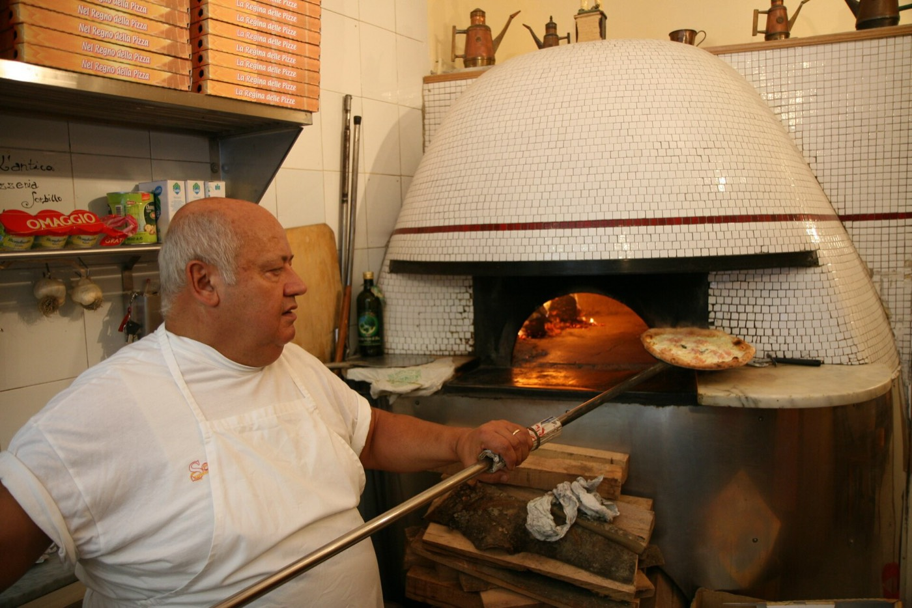

Etapa 02
Caputo 00 · Pré-fermento · 3 dias
Protocolo da Pizza Napolitana
Feita à mão em três dias, calibrada fornada a fornada. Ajuste os parâmetros; quantidades, cronograma e instruções se recalculam.
por Jhonathan Sousa· v1.0 · out 2026
Pizzas800 g · 270 g
Massa total
1.348 g
hidratação 64%Panetti
5 × 270 g
pizzas de ~30–32 cmForno superior
450 °C
pré-aquecer 30–40 minForno inferior
380 °C
principal ajuste desta faseI · A massa
Receita
Percentuais de padeiro sobre a farinha. Mude um parâmetro e toda a página acompanha.
Água
Em duas partes
- Inicial94 g
- Bassinage18 g
Divisão
Panetti
- Principal5 × 270 g
- Alvo30–32 cm
Coberturas
Para 5 pizzas
- Molho325 g
- Mozzarella350 g
II · O tempo
Três dias, uma noite.
O sabor vem do frio e da espera. O cronograma conta para trás a partir da hora de assar.
II · O tempo
Cronograma
Informe quando quer assar; cada evento é calculado de trás para a frente.
- 19:00qui., 19/11Montar o pré-fermento
400 g de farinha + 400 g de água + fermento.
- 20:00qui., 19/11Geladeira
20 h a 7 °C.
- 16:00sex., 20/11Mistura e divisão · próximo, em 5 h 10
Mistura, bassinage, dobras, azeite e panetti.
- 19:30sáb., 21/11Assar
450 °C em cima, 380 °C na pedra.
III · O gesto
Assista antes, faça depois.
Treze etapas animadas com as suas quantidades. O filme acompanha a etapa em que você está.
III · O gesto
Passo a passo
Marque cada etapa ao concluir. À esquerda, a demonstração animada da etapa em foco.
Dia 2 · 04/13
Dia 2 · mistura
Bassinage
- Junte os 18 g de água restantes em 3 adições.
Filme · Bancada
Dia 2
mistura e divisãoEtapa 04
Bassinage
- Adicione 18 g de água em três partes, esperando a massa absorver.
- Trabalhe com a mão em pinça até a superfície voltar a ficar lisa.
Se a massa "nadar", pare e descanse 5 min antes da próxima adição.
Etapa 05
Desenvolver o glúten
- Dobras em envelope com a mão molhada.
IV · O fogo
Foto: CDibisceglia, CC BY-SA 4.0
Noventa segundos decidem tudo.
A primeira pizza calibra o forno. Cronometre, leia a borda, ajuste a pedra.
IV · O fogo
Forno
Cronômetro de bancada e diagnóstico pelo resultado.
Cronômetro
48 s
0306090120150
Diagnóstico
Baixe a pedra em 10 °C.
Inferior hoje: 380 °C → 370 °C
Inferior hoje: 380 °C → 370 °C
V · O ofício
Regras da versão 1.0
O gargalo atual não é a massa. É a calibração térmica e a técnica de abertura.
- Uma variável por fornada. Mude só a pedra ou só a hidratação.
- A primeira pizza é teste. Sirva a segunda.
- Pouco molho, queijo seco. Umidade é inimiga do fundo.
- Anote tudo. O protocolo evolui com dados.
VI · A origem
Sobre
De onde vem a pizza e por que este protocolo existe.

A pizza napolitana nasceu como comida de rua: massa, tomate, fogo forte e pressa. O que parece simples depende de fermentação longa e de um forno acima de 400 °C.
Este site é o caderno de bancada de uma cozinha doméstica, publicado para quem quer repetir o resultado.